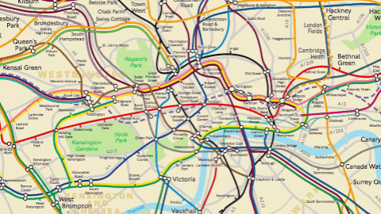
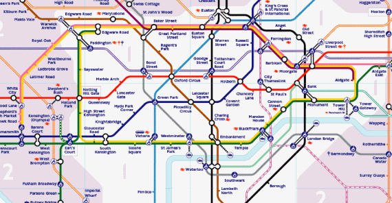
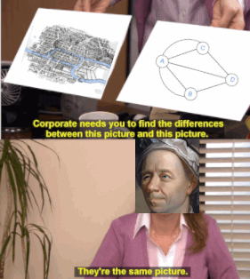
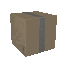

Computational Thinking
A way of solving problems by designing an algorithm and using a computer
The algorithm needs to give the right answer, and do so efficiently
some algorithms are better than others
Abstraction
Making a problem simpler by removing pieces of information that aren't important to solving it
e.g. the tube map

- it's ugly
- it's too detailed
it doesn't matter where the lines actually go, just which stations they serve and how they connect

this contains the same amount of useful information, but no more
this makes it easier to read
also bridges of Königsberg

High level languages are an abstraction of machine code
Thinking ahead
- Think about the required inputs of an algorithm
- Ensure these are met using checks, or specifying preconditions
If you compute the same value many times, store it in cache to save time
Procedural Abstraction
aka encapsulation
You can use subroutines without knowing how they work, just what they do
these could be imported from a library

e.g. graphics rendering
you can use a procedure to draw a shape without knowing how the individual pixels to colour are calculated
Top-down Decomposition
break a problem into simpler sub-tasks
easier to solve, test and maintain